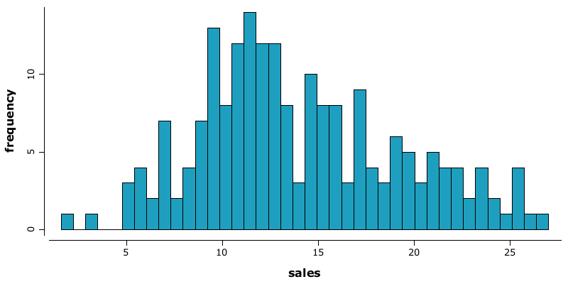
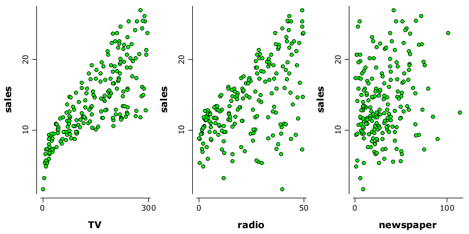
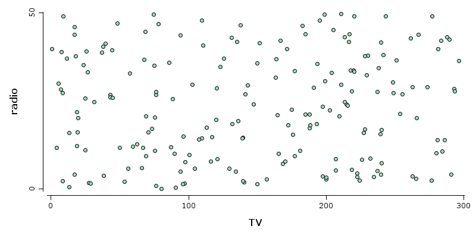

Brief preview
Brief preview
This notebook is intended to be a starting point for using rapaio library in a IJava jupyter notebook. We use a real simple data set. The analysis is not indended to be an example for how to conduct an inference. The line story poresented exists only to make the exemplification more friendly.
Set up things
First of all we have to import the library. We can do that either through maven magic or, if we have a locally compiled project source code, through jar magic.
However we prepared an additional easier option: loading rapaio-bootstrap notebook. This is useful since this bootstrap notebook can be enriched in order to contain whatever additional configurations tailored for your needs.
%load rapaio-bootstrap
Use a data set
We load a well known small data set used in the wonderful book: An Introduction to Statistical Learning with Applications in R, Gareth James, Daniela Witten, Trevor Hastie and Robert Tibshirani. This is the book's website.
// skip the first column since it is the row number
var df = Csv.instance().skipCols.set(IntRule.from(0))
.readUrl("http://faculty.marshall.usc.edu/gareth-james/ISL/Advertising.csv");
Take a look at some of the data frame values.
df.printContent();
TV radio newspaper sales TV radio newspaper sales
[0] 230.1 37.8 69.2 22.1 [8] 8.6 2.1 1 4.8
[1] 44.5 39.3 45.1 10.4 [9] 199.8 2.6 21.2 10.6
[2] 17.2 45.9 69.3 9.3 ... ... ... ...
[3] 151.5 41.3 58.5 18.5 [195] 38.2 3.7 13.8 7.6
[4] 180.8 10.8 58.4 12.9 [196] 94.2 4.9 8.1 9.7
[5] 8.7 48.9 75 7.2 [197] 177 9.3 6.4 12.8
[6] 57.5 32.8 23.5 11.8 [198] 283.6 42 66.2 25.5
[7] 120.2 19.6 11.6 13.2 [199] 232.1 8.6 8.7 13.4
And see some statistics on the data frame.
df.printSummary();
Frame Summary
=============
* rowCount: 200
* complete: 200/200
* varCount: 4
* varNames:
0. TV : dbl |
1. radio : dbl |
2. newspaper : dbl |
3. sales : dbl |
* summary:
TV [dbl] radio [dbl] newspaper [dbl] sales [dbl]
Min. : 0.7000000 Min. : 0.0000000 Min. : 0.3000000 Min. : 1.6000000
1st Qu. : 74.3750000 1st Qu. : 9.9750000 1st Qu. : 12.7500000 1st Qu. : 10.3750000
Median : 149.7500000 Median : 22.9000000 Median : 25.7500000 Median : 12.9000000
Mean : 147.0425000 Mean : 23.2640000 Mean : 30.5540000 Mean : 14.0225000
2nd Qu. : 218.8250000 2nd Qu. : 36.5250000 2nd Qu. : 45.1000000 2nd Qu. : 17.4000000
Max. : 296.4000000 Max. : 49.6000000 Max. : 114.0000000 Max. : 27.0000000
Data exploration
Let's see how Sales variable visually looks like.
WS.image(hist(df.rvar("sales"), bins(40), fill(6)));

Let's look at the relation between DVs and IV.
WS.image(gridLayer(1,3)
.add(points(df.rvar("TV"), df.rvar("sales"), pch(2), fill(3)))
.add(points(df.rvar("radio"), df.rvar("sales"), pch(2), fill(3)))
.add(points(df.rvar("newspaper"), df.rvar("sales"), pch(2), fill(3))));

We have an idea that TV and radio are correlated with sales. First we can check if this is true. We can do that by measuring the correlation between them.
CorrPearson.of(df.rvar("TV"), df.rvar("sales")).printContent();
> pearson[TV, sales] - Pearson product-moment correlation coefficient
0.7822244
CorrSpearman.of(df.rvar("TV"), df.rvar("sales")).printContent();
> spearman[TV, sales] - Spearman's rank correlation coefficient
0.8006144
As expected, the correlation is strong and a little bit unlinear. This is probably to be expected.
CorrPearson.of(df.rvar("radio"), df.rvar("sales")).printContent();
> pearson[radio, sales] - Pearson product-moment correlation coefficient
0.5762226
CorrSpearman.of(df.rvar("radio"), df.rvar("sales")).printContent();
> spearman[radio, sales] - Spearman's rank correlation coefficient
0.5543037
Correlation is lower, as expected from the visualization. However, it must be higher than the newspaper.
CorrPearson.of(df.rvar("newspaper"), df.rvar("sales")).printContent()
> pearson[newspaper, sales] - Pearson product-moment correlation coefficient
0.228299
TV and radio
It seems obvious that TV and radio dependent variables have a strong influence on sales. It becomes interesting to understand if those contributions are strongly correlated or not. If they are correlated, than our predictive power would be probably lower because the two variables would share the same information. If they are relatively independent, than our prediction would be better, since the information space would be spanned into more than one important dimension.
WS.image(points(df.rvar("TV"), df.rvar("radio"), fill(23), pch(2)))

They look unrelated.
CorrPearson.of(df.rvar("TV"), df.rvar("radio")).printContent();
CorrSpearman.of(df.rvar("TV"), df.rvar("radio")).printContent();
> pearson[TV, radio] - Pearson product-moment correlation coefficient
0.0548087
> spearman[TV, radio] - Spearman's rank correlation coefficient
0.0561234
We were right, even Spearman's rho could not get much of it.
Linear regression
LinearRegressionModel lm = LinearRegressionModel.newModel();
lm.fit(df, "sales");
lm.predict(df, true).printSummary();
Regression predict summary
=======================
Model class: LinearRegression
Model instance: LinearRegression{}
> model is trained.
> input variables:
1. (Intercept) dbl
2. TV dbl
3. radio dbl
4. newspaper dbl
> target variables:
1. sales dbl
Target <<< sales >>>
> Residuals:
Min 1Q Median 3Q Max
-8.8276871 -0.8908135 0.2418018 1.1893186 2.8292226
> Coefficients:
Name Estimate Std. error t value P(>|t|)
(Intercept) 2.9388894 0.3119082 9.4222884 <2e-16 ***
TV 0.0457646 0.0013949 32.8086244 <2e-16 ***
radio 0.1885300 0.0086112 21.8934961 <2e-16 ***
newspaper -0.0010375 0.0058710 -0.1767146 0.8599151
--------
Signif. codes: 0 '***' 0.001 '**' 0.01 '*' 0.05 '.' 0.1 ' ' 1
Residual standard error: 1.6855104 on 196 degrees of freedom
Multiple R-squared: 0.8972106, Adjusted R-squared: 0.8956373
F-statistic: 570.271 on 3 and 196 DF, p-value: <2e-16
The linear regression tells us that our intuitions are right regarding the importance of TV and radio and aparently less important newspaper. It says also that both of them are important on their own right, being independent.
Now we can check if a model withot newspaper variable has the same performance as the full model.
var reducedDf = df.mapVars("TV,radio,sales");
var lm2 = LinearRegressionModel.newModel();
lm2.fit(reducedDf, "sales");
lm2.predict(reducedDf, true).printSummary();
Regression predict summary
=======================
Model class: LinearRegression
Model instance: LinearRegression{}
> model is trained.
> input variables:
1. (Intercept) dbl
2. TV dbl
3. radio dbl
> target variables:
1. sales dbl
Target <<< sales >>>
> Residuals:
Min 1Q Median 3Q Max
-8.7976997 -0.8751582 0.2421943 1.1707702 2.8328368
> Coefficients:
Name Estimate Std. error t value P(>|t|)
(Intercept) 2.9210999 0.2944897 9.9191929 <2e-16 ***
TV 0.0457548 0.0013904 32.9087083 <2e-16 ***
radio 0.1879942 0.0080400 23.3824460 <2e-16 ***
--------
Signif. codes: 0 '***' 0.001 '**' 0.01 '*' 0.05 '.' 0.1 ' ' 1
Residual standard error: 1.6813609 on 197 degrees of freedom
Multiple R-squared: 0.8971943, Adjusted R-squared: 0.8961505
F-statistic: 859.618 on 2 and 197 DF, p-value: <2e-16
We have a similar adjusted R2, as we expected.